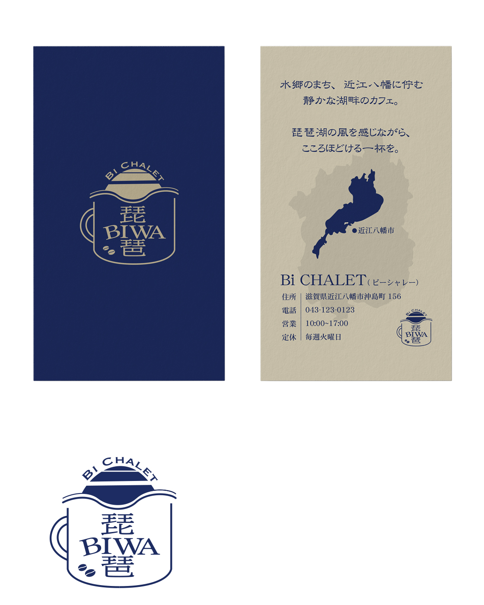

琵琶湖湖畔カフェ Bi CHALET
Graphic Design / Branding Design / Card Design
Adobe Illustrator
琵琶湖の景色を眺めながら、ゆったりとした時間を過ごせる湖畔カフェ「Bi CHALET（ビーシャレー）」のロゴとカードをデザイン。自然の心地よさと穏やかな雰囲気が伝わるデザインを目指した。ロゴには、カフェを連想させるコーヒーカップの形に「琵琶」の文字と波線を組み合わせ、琵琶湖を身近に感じられるモチーフを取り入れた。ネイビーとベージュを基調とした落ち着いた配色で、木を基調としたログハウス調の店舗や、湖畔の静かで心地よい空間をイメージ。カードにも湖の穏やかな波と太陽のモチーフを取り入れ、琵琶湖の景色を感じながら過ごすカフェの世界観を表現した。